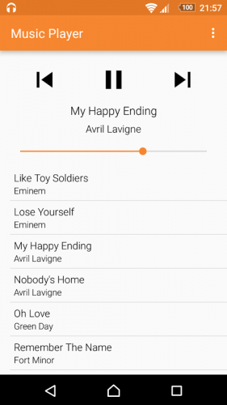

Autunm Player:
Um player de musica com a tematica da estação Outono
conta com suas principais atrações o design retro,
a ausência de anúncios,template simples e organizado,
além de vários recursos planejados para implementacões em versões futuras.
Awards and Achievements
- The Best Music Player, 2032
- Most Popular Meta Music Player, 2028